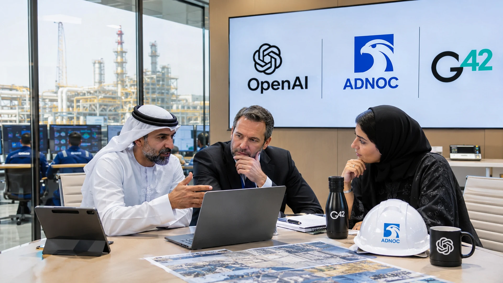

Financial news, market analysis and technology
Top Story
Market Analysis View all →

Market Analysis
Deutsche Bank Turns Bullish on US Technology Stocks After October Selloff
The bank has reversed a recent downgrade after technology shares lagged the broader US market. Its argument rests on valuations, investor positioning and earnings, while the return on AI infrastructure spending remains uncertain.

Market Analysis
ECB Flags AI Valuations, Bond Stress and Nonbank Losses as Financial Risks
An ECB official has identified three potential sources of financial instability. The warning focuses on how falling asset prices could spread through interconnected markets rather than predicting an imminent crisis.

Market Analysis
OPEC+ Keeps December Oil Production Targets Unchanged Amid Supply Disruptions
Seven producers have maintained their required December output levels while regional disruptions complicate actual shipments. The next decision, due November 29, will come as the group prepares production baselines for 2027.

Market Analysis
Bank of England Faces First Rate Increase Since 2023 as Energy Inflation Returns
Markets are bracing for a Bank of England rate increase as energy costs revive inflation risks. The bigger signal may come from what policymakers say about 2027.
Tech & AI View all →

Tech & AI
OpenAI, ADNOC and G42 Sign Energy AI Deal as Abu Dhabi Expands Its Technology Push
OpenAI, ADNOC and G42 are taking AI into the energy sector. The agreement raises a bigger question: how far can the technology reshape operations at one of the world's major oil producers?

Tech & AI
HSBC Plans Hong Kong AI Institute for 2027 as Banks Race to Deploy AI Agents
HSBC plans a new AI institute in Hong Kong as banks race to automate more work. The difficult part may be proving that faster systems are also safe.

Tech & AI
DeepSeek Releases Open-Source Super-Agent Prototype, Intensifying the Race to Automate Coding Work
DeepSeek has published research code for an AI agent designed to carry software tasks through to pull requests. Its limitations show the gap between a promising demo and a dependable tool.

Tech & AI
Anthropic Files SEC S-1 for Planned IPO
Anthropic filed its S-1 on October 26, revealing its intended Nasdaq listing while leaving IPO pricing and timing open.
Crypto View all →

Crypto
Crypto Industry Enters US Midterms After $176 Million Political Spending Push
Crypto groups have spent about $176 million to influence US politics, Reuters found. With the midterms approaching, the stakes extend well beyond campaign donations to the rules governing digital assets.

Crypto
Binance Says Withdrawal Flows Are Stabilising After $3.64 Billion Exit Rush
Binance says withdrawal activity is settling after a rush to move funds. Outside estimates tell a more complicated story about how quickly confidence can return.

Crypto
Polymarket Attack Drained $2.73 Million From 737 Accounts, Exposing a Third-Party Security Weakness
A security breach exposed hundreds of Polymarket accounts and triggered millions in reported losses. The suspected entry point raises questions that extend beyond one prediction market.

Crypto
Bitcoin Lost 7.3% in October as Ether Slid 16%: Can November Seasonality Matter?
Bitcoin and Ether ended October under pressure. A widely circulated November return average looks bullish, but its dependence on exceptional past gains makes it a poor standalone forecast.
News Feed